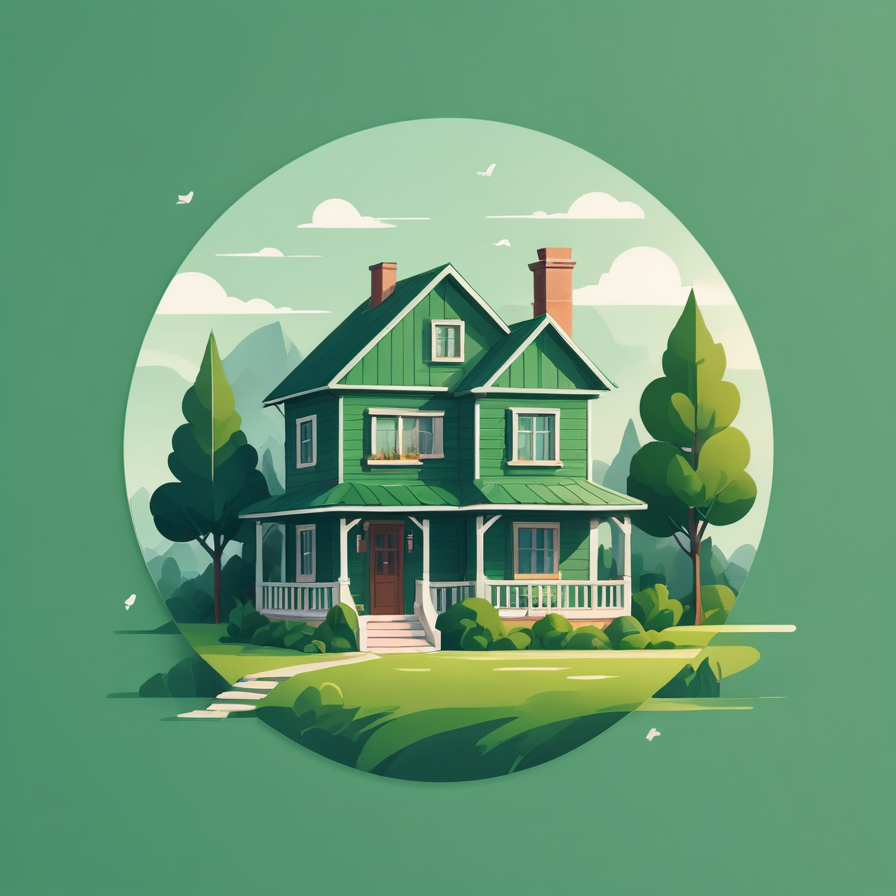

🏠Zona 0–5 m
- Sem combustíveis junto a fachadas (vasos plásticos, lenha, tapetes).
- Solo mineral (lajedo/brita). Relva curta e verde.
- Caleiras/beirais limpos; redes metálicas finas (<5 mm) em vãos.

Consulta o perigo meteorológico diário no IPMA e adapta as atividades:
Queima: eliminação de sobrantes (pequenas pilhas). Queimada: uso do fogo para renovação de pastagens/gestão de povoamentos (maior risco). Ambas exigem regras específicas e, muitas vezes, autorização ou comunicação prévia. Confirma sempre na tua Autarquia/ICNF e segue as condições impostas (meios, horário, vigilância e meteorologia favorável).
Apenas com fogo muito próximo e se for seguro. Prioridade: zona 0–5 m limpa, aberturas protegidas e evacuação quando indicada.
Extintor ABC (pó químico), revisto anualmente e acessível. Aprende a usar e verifica pressão/selo.
Confirma sempre com a Autarquia/ICNF. Em muitos períodos exige-se autorização/comunicação prévia, meios de 1.ª intervenção e vigilância contínua.
Quando for dada ordem pelas autoridades ou se a aproximação do fogo/fumo tornar insegura a permanência. Se tiveres dúvidas, evacua cedo por rotas seguras previamente definidas.
Procura zona mineral (estrada, terreiro), afasta-te da vegetação, entra num edifício/viatura com janelas fechadas e ventilação desligada. Protege vias aéreas com pano húmido.
Máscaras P2/FFP2 reduzem partículas inaladas, mas não substituem a evacuação. Evita esforço e procura locais com ar limpo.
Avisos à população, ocorrências e programas “Aldeia Segura / Pessoas Seguras”.
prociv.gov.ptMapa oficial diário do perigo por concelho e data.
ipma.ptIndicadores e condicionantes por nível de risco.
fogos.icnf.ptLinha 24h para denúncias e informações ambientais.
gnr.pt/ambiente.aspxPortal interinstitucional: prevenção, planeamento e relatórios.
sgifr.gov.ptPrograma oficial para a interface urbano-florestal.
aldeiasseguras.ptLigue imediatamente 112